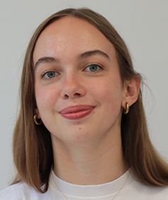

Élève à Mines Paris PSL — P25
Étudiante en première année à l’École Nationale Supérieure des Mines de Paris, je suis à la recherche de premières expériences professionnelles pour mettre en avant les compétences développées au cours de mon cursus et enrichir mon parcours.